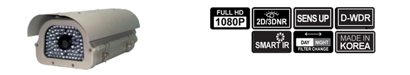
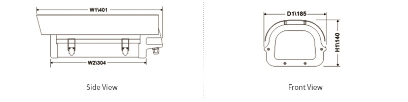
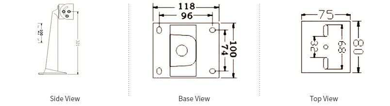
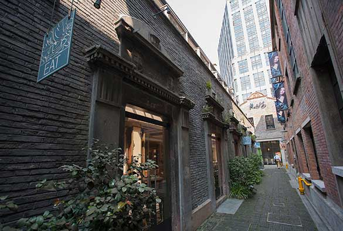
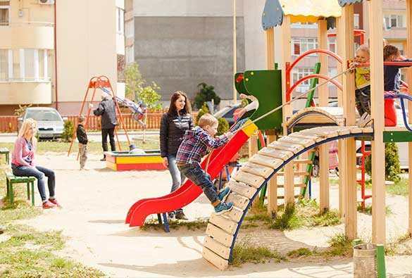

PROFESSIONAL CCTV PRODUCT SERIES
All IN ONE 1channel Full HD Recorder Solutions
MAIN FEATURES
- 1CH 1080P ALL IN ONE Recorder Solutions
(AHD DVR, Camera & Lens), - Support 30fps@1080P,
- Provide 24Hours Recording or More time according to recording conditions & storage media.
- Provide Exact Time Adjustment
(with GPS option), - Selectable Storage media for recording
(2.5” HDD type, SSD type) - Network access Lan or WIFI Direct (Option)
- 2.43 Mega Pixel 1/2.9” Sony CMOS Sensor
- AHD V2.0 or CVBS(1280H) Video Output
- 3 Mega 2.8-12mm DC LENs(Optional,
6-50mm DC VF LENS, AF 2.8-12mm VF LENs - D-WDR, 2D/3D DNR
Sens -Up - Smart IR
- Motion Detection
- LSC (Lens Shading Compensation)
- Mirror / Defog / BLC / HLC
- Up to 50 meter Distance

- SPECIFICATION
- DIMENSION
- APPICATIONS
Specification
| CAMERA SPECIFICATIONS | |
|---|---|
| Image Sensor | 1/2.9" 2.4Mega-Pixel Sony CMOS sensor |
| Total Pixels | 1984(H) x 1225(V) = 2.43M (pixel) |
| Camera Signal | NTSC/PAL |
| Camera Output | AHD 2.0 |
| Output Video Resolutions | AHD 1920 X 1080 |
| Min. Illumination | 0.1 Lux (0 Lux with built-in LEDs) |
| S/N ratio | 50dB (AGC off) |
| Video Output | AHD 1920 X1080 |
| Lens | 2.8~12mm , Optional LENs 6-50mm IRIS VF LENs |
| Noise Reduction | Smart 3DNR, 2DNR |
| Electronic shutter | 1/30(1/25), 1/60(1/50), FLK, 1/240(1/200), 1/480(1/400), 1/1K, 1/2K, 1/5K, 1/10K, 1/50K, Sens Up : x2, x4 x6, x8, x10, x15, x20, x25, x30 |
| White Balance | 2000~8000K Automatic tracking |
| Day & Night | True Day & Night (ICR) |
| DNR | 2D/3D DNR, Smart DNR |
| PRIVACY MASKING | SUPPORT |
| IR LEDS | 8 Power IR LEDS |
| OSD Language | Multi Language (ENG, JPN) |
| DVR SPECIFICATIONS | |
|---|---|
| Compression Type | H.264 |
| Recording Resolution | 1080P/ 720P/ 960H/ D1/ CIF |
| Recording Speed | 30FPS/1080P |
| Image Quality | 5 Level |
| Recording Mode | Continuous / Event / Motion / Schedule Recording |
| Recording Devices | 2.5” HDD / SSD Card (Optional) |
| Playback Speed | X1 – x 32 |
| Time Adjustment Function | GPS (Option) |
| Protection Rating | Area & Sensitivity Setting Up |
| Status LED | Work/ Record/ Network |
| OSD Language | Multi Language (ENG/JPN) |
| PHYSICAL SPECIFICATIONS | |
|---|---|
| Dimension | 444(W1) X 185(D) X 140(H) |
| Power | DC 12V / 3.5A |
| Consumption | T.B.D |
| Fan | Always ON |
| Operation Temperature /Humidity | T.B.D |
Notice : Some specifications should be changeable without prior notice
HOUSING DIMENSION

BRAKET DIMENSION

APPICATIONS SITES


